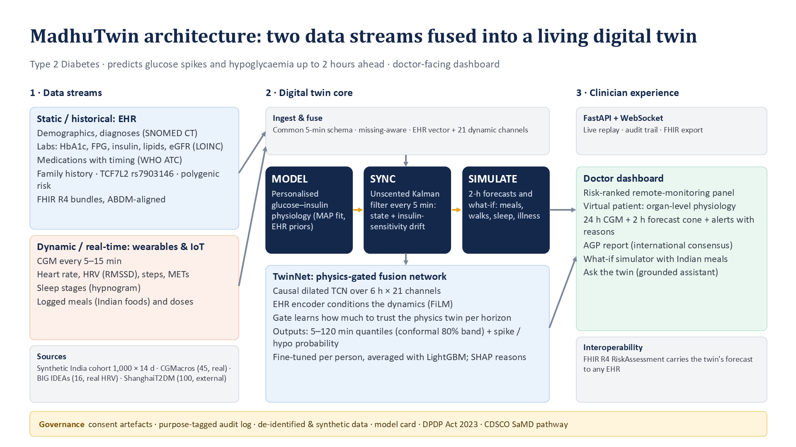
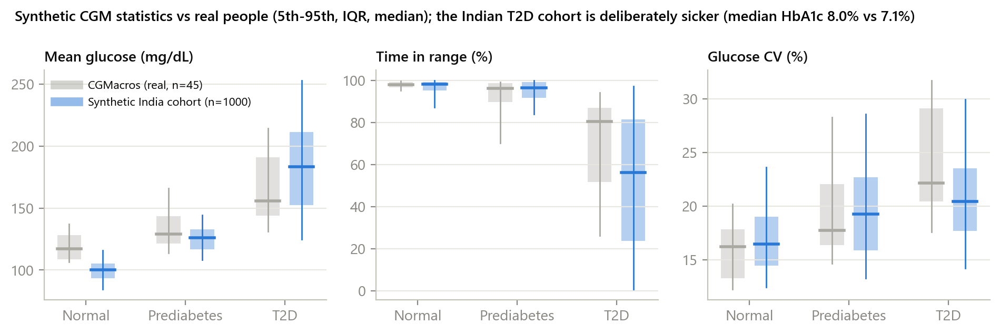
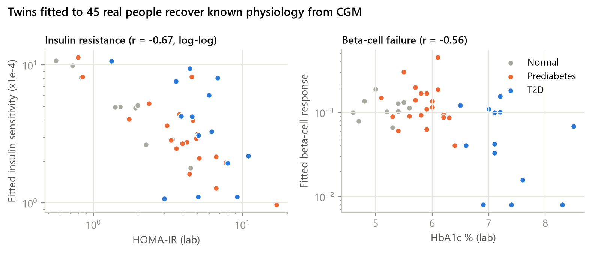
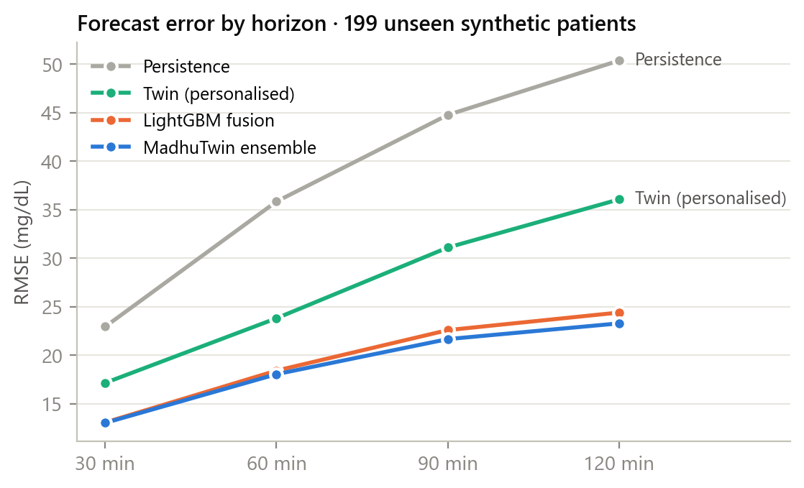
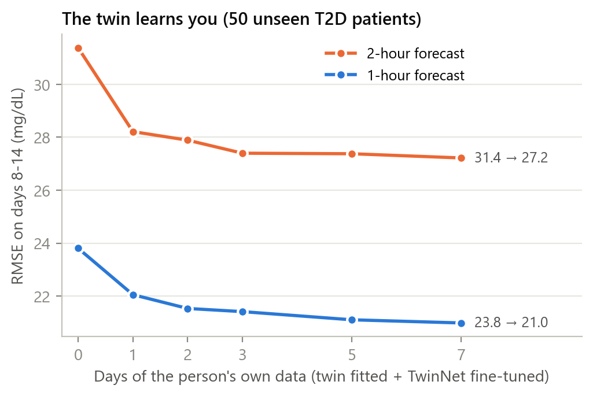
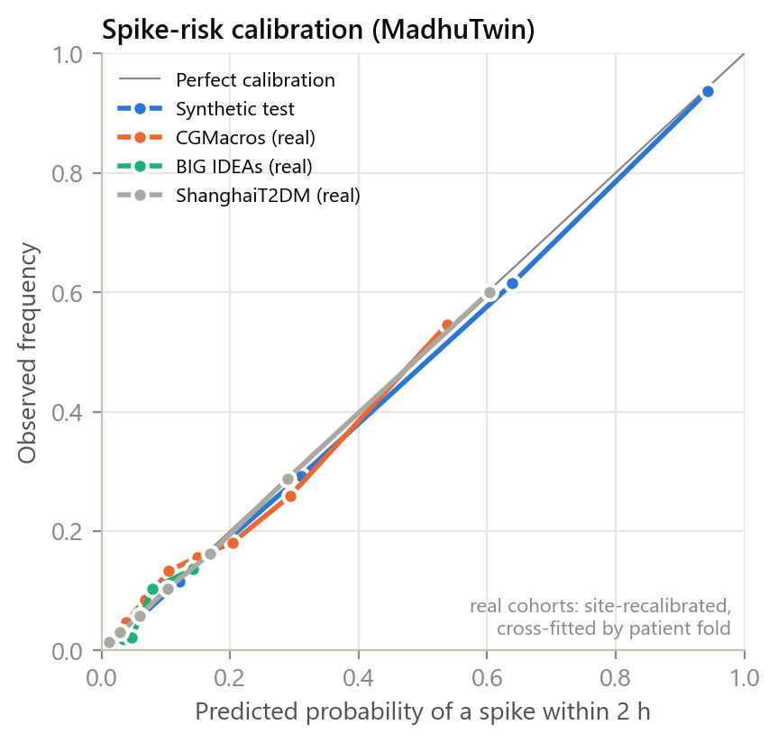
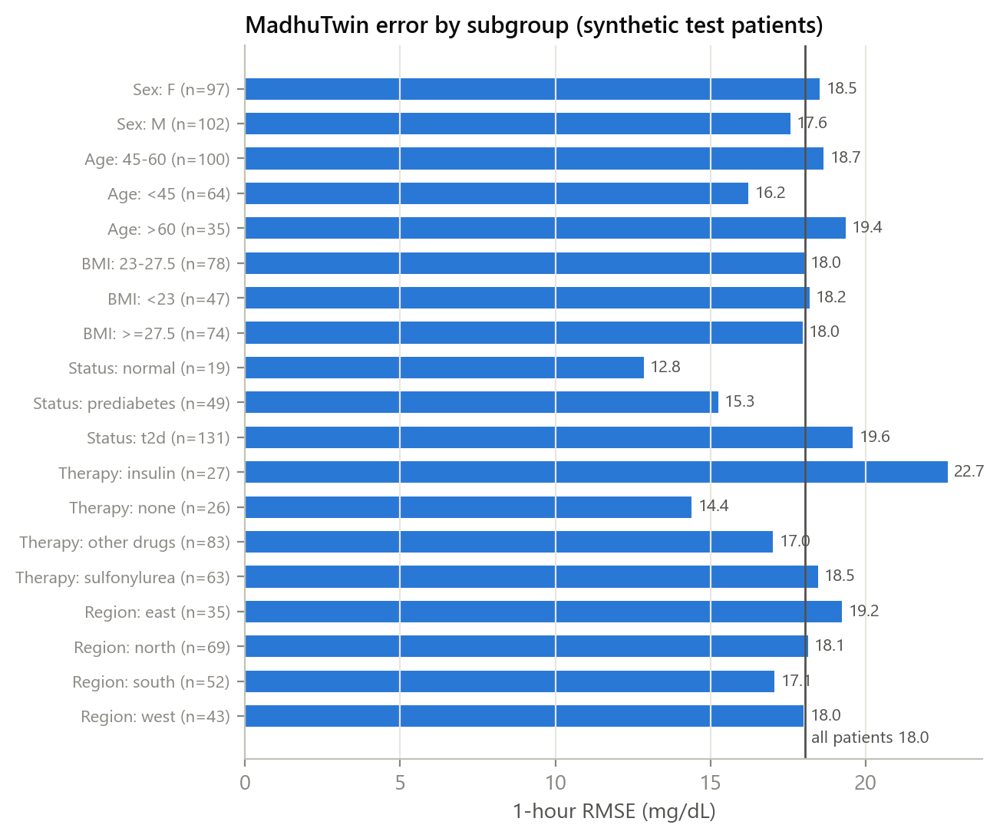
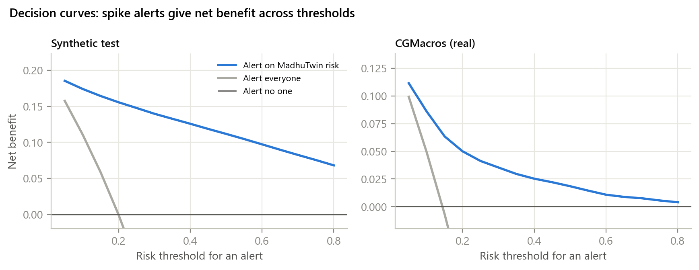
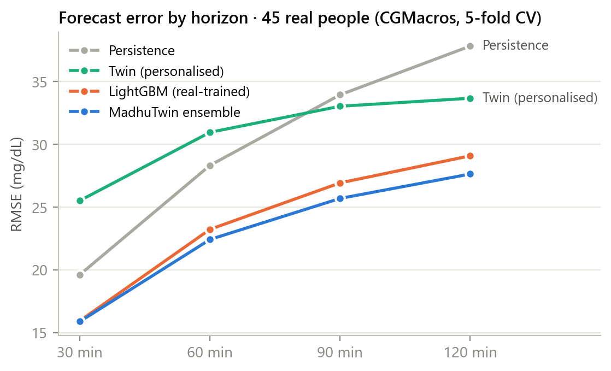
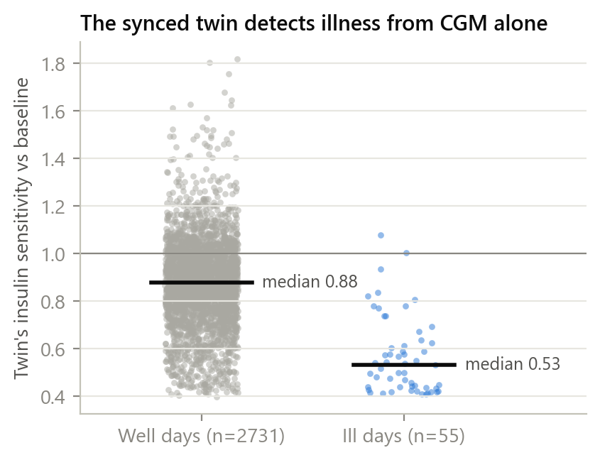

India has about 101 million adults with diabetes and 136 million with prediabetes (ICMR-INDIAB, 2023). Care is visit-based: a quarterly HbA1c summarises the past, while the dangerous moments (post-meal spikes, night-time lows on sulfonylureas or premixed insulin, loss of control during illness) happen between visits. CGMs and smartwatches now record them, but a care team cannot watch hundreds of streams. MadhuTwin targets remote monitoring by a diabetes care team: forecast glucose 5–120 minutes ahead with an 80% interval, estimate the probability of a sustained excursion above 180 or below 70 mg/dL within two hours, rank the panel by risk, explain each alert, and let the clinician test meals, walks, sleep or illness on the patient's own twin.

The system has three digital-twin properties. Model: a personalised mechanistic model of glucose–insulin physiology. Sync: the model's hidden state and a drifting insulin-sensitivity factor are re-estimated from every CGM reading. Simulate: the synchronised twin is run forward for forecasts and counterfactual what-ifs. On top, TwinNet learns the residual the physics misses and how much to trust the physics at each horizon.
| Source | People | Streams | Role |
|---|---|---|---|
| Synthetic India-calibrated cohort (this project) | 1,000 × 14 days | FHIR R4 EHR (labs, ATC drugs, SNOMED diagnoses, genetics), CGM, HR, HRV, steps, sleep, meals, doses | Training at scale; controlled ablations; illness ground truth |
| CGMacros (PhysioNet, CC BY-NC-SA 4.0) | 45 | Dexcom/Libre CGM, Fitbit HR and steps, meal macros, labs | Real-world validation; twin-validity analysis |
| BIG IDEAs (PhysioNet, ODC-By 1.0) | 16 | Dexcom G6 CGM, Empatica E4 heart rate and beat intervals (HRV computed), food logs | Real wristband HR and HRV |
| ShanghaiT2DM (Figshare, CC BY 4.0) | 100 (109 recordings) | 15-min CGM, diet, insulin and oral drugs, labs; no wearables | External population; missing-modality test |
The synthetic EHR follows Indian epidemiology (status mix from ICMR-INDIAB, South-Asian BMI phenotype, Indian prescribing such as premixed 30/70 insulin, gliclazide and teneligliptin) and regional meals from the Indian Food Composition Tables. Crucially, the wearable streams are generated by the same simulated body, and labs are measured from it (HbA1c from mean glucose via ADAG), so the two streams are causally coupled. Realistic imperfections are injected: unlogged meals, carbohydrate misestimation, CGM noise and compression lows, missed doses, illness and stress days. Physiological parameter distributions come from twins fitted to the 45 CGMacros participants.

Meal appearance Ra(t) depends on carbohydrate, glycaemic index, fat and fibre. Time-varying multipliers encode sleep loss, illness and stress (m_si), the dawn phenomenon (egp), sulfonylurea secretion, DPP-4 incretin enhancement (m_inc), the SGLT2-lowered renal threshold, and rapid, regular, basal and premixed insulin kernels. A Numba-compiled integrator (verified against the NumPy reference) makes a patient fit about 12× faster.
Five parameters (fasting set-point Gb, insulin sensitivity SI, beta-cell response β, dawn amplitude, absorption-speed scale) are fitted by maximum a posteriori estimation with EHR-derived priors, using a multiple-shooting objective over 4-hour windows (1-hour burn-in, 3 hours scored). On the 45 CGMacros participants the twin's error falls from 37.7 mg/dL with EHR priors to 26.6 mg/dL once personalised, and the fitted SI and β track laboratory HOMA-IR and HbA1c (Figure 3).

An Unscented Kalman Filter estimates seven states every 5 minutes: the six model states and a log insulin-sensitivity multiplier that follows a bounded random walk. A sustained fall in that multiplier is surfaced as an insight (possible infection, stress or steroid use).
TwinNet reads 6 hours × 21 dynamic channels (CGM, heart rate, HRV, steps, METs, sleep, carbohydrate and insulin on board, logged events, time of day) through a causal dilated temporal convolution (dilations 1–16). An EHR encoder conditions the sequence features through FiLM, so the same meal is read differently for different bodies. The synchronised twin's 2-hour forecast and hidden state enter through a learned per-horizon gate; heads output P10/P50/P90 glucose at 5–120 minutes and the probabilities of a spike or a low within 2 hours. Modality dropout lets one model run without wearables or EHR, and conformalised quantile regression calibrates the 80% band. The learned trust in physics rises from 0.71 at 30 minutes to 0.92 at 2 hours.
The twin then learns the individual: TwinNet is fine-tuned for a few epochs on the person's own earlier windows only, and its median and event probabilities are averaged with a LightGBM model on hand-crafted features of the same inputs. LightGBM's TreeSHAP values give the plain-language reasons attached to every alert. Both models are trained with class weighting so that rare events are learned, which inflates raw probabilities; the ensemble's risks are therefore recalibrated with Platt scaling, fitted on validation patients for the synthetic cohort and, for each real-data site, on other patients only (cross-fitted by fold in evaluation).
| Method | RMSE 30 | RMSE 60 | RMSE 120 | MARD 60 % | Clarke A+B 60 % | PI80 cov. 60 % |
|---|---|---|---|---|---|---|
| Persistence | 22.9 | 35.8 | 50.4 | 14.7 | 98.2 | – |
| TwinNet hybrid | 13.6 | 19.0 | 24.9 | 8.2 | 99.4 | – |
| LightGBM fusion | 13.1 | 18.4 | 24.4 | 8.3 | 99.5 | – |
| TwinNet personalised | 13.4 | 18.6 | 24.2 | 8.1 | 99.5 | 79 |
| MadhuTwin ensemble | 13.0 | 18.0 | 23.3 | 8.0 | 99.5 | 79 |

| Method | AUROC | AUPRC | Prev. % | Caught at ≤1 FA/day % | Lead (min) |
|---|---|---|---|---|---|
| TwinNet hybrid | 0.956 | 0.859 | 20.0 | 90 | 110 |
| LightGBM fusion | 0.956 | 0.860 | 20.0 | 90 | 110 |
| TwinNet personalised | 0.947 | 0.829 | 20.0 | 89 | 110 |
| MadhuTwin ensemble | 0.961 | 0.871 | 20.0 | 90 | 110 |
Spike above 180 mg/dL within 2 hours. Hypoglycaemia: AUROC 0.968 for MadhuTwin ensemble.
| Streams (LightGBM retrained) | RMSE 60 | Spike AUROC |
|---|---|---|
| CGM only | 24.87 | 0.923 |
| CGM + EHR | 23.82 | 0.931 |
| CGM + wearables | 23.99 | 0.930 |
| CGM + meals/meds | 21.38 | 0.937 |
| CGM + wearables + meals/meds | 21.12 | 0.941 |
| Both streams (dynamic + EHR) | 20.12 | 0.949 |
| Both streams + physics twin | 18.44 | 0.955 |
Every stream adds information, and the EHR helps most in combination: it tells the model whose body the wearables describe. Adding the physics twin's forecast as a feature cuts the 60-minute error from 24.9 (CGM only) to 18.4 mg/dL.

| Days of personal data | RMSE 60 | RMSE 120 |
|---|---|---|
| 0 | 23.81 | 31.38 |
| 1 | 22.05 | 28.21 |
| 2 | 21.53 | 27.89 |
| 3 | 21.41 | 27.40 |
| 5 | 21.10 | 27.38 |
| 7 | 20.98 | 27.22 |



Across 19 subgroups the 1-hour error ranges from 12.8 to 22.7 mg/dL.
| Cohort (recordings) | Persistence RMSE 60 | MadhuTwin RMSE 30 | RMSE 60 | RMSE 120 | Clarke A+B 60 % | Spike AUROC | Caught at ≤1 FA/day % |
|---|---|---|---|---|---|---|---|
| CGMacros (45) | 28.3 | 15.9 | 22.4 | 27.6 | 99.5 | 0.822 | 82 |
| BIG IDEAs (16) | 23.0 | 13.9 | 19.0 | 21.8 | 99.3 | 0.765 | 58 |
| ShanghaiT2DM (109) | 27.5 | 12.2 | 21.1 | 30.1 | 98.9 | 0.893 | 89 |
All real-data results use 5-fold patient-level cross-validation. A model trained only on synthetic data does not transfer to a new population without a short fine-tune (zero-shot rows in the evaluation report), while synthetic pretraining followed by fine-tuning on a few real patients is the regime we recommend.


Using the daily mean of the UKF's insulin-sensitivity multiplier as a score, ill days are separated from well days with AUROC 0.885 (55 ill days of 2786); the multiplier averages 0.57 on ill days against 0.87 on well days, without any symptom being entered.
After one week of CGM, only 4 fingersticks a day and a smartwatch remain. The synchronised twin estimates continuous glucose with a MARD of 6.4% (carrying the last fingerstick forward: 23.8%) and weekly time in range within ±3.8 percentage points, on 199 unseen synthetic patients. Because the simulator shares the twin's structure, this is an upper bound until tested on real CGM-off data.
The therapy simulator (section 7) runs the mechanistic twin open-loop for 24 hours, so we test exactly that: from the synced state at the start of every day after calibration, the twin replays the day with the logged meals, doses and activity, and the result is compared with the CGM.
| Cohort | Days | Median MAE | Daily-mean error | TIR error (pp) | Good % | Poor % |
|---|---|---|---|---|---|---|
| Synthetic test | 350 | 13.7 | 5.5 | 4.9 | 69 | 2 |
| CGMacros | 212 | 17.9 | 7.0 | 2.8 | 55 | 14 |
| BIG IDEAs | 55 | 14.4 | 5.1 | 0.7 | 80 | 2 |
| ShanghaiT2DM | 511 | 26.2 | 11.7 | 7.3 | 25 | 29 |
The twin tracks daily mean glucose and time in range closely but rarely reproduces short lows. The simulator therefore reports means, time in range and time above range, shows this replay check for each patient (with a warning when agreement is poor), and leaves hypoglycaemia warnings to the validated 2-hour forecast.
One deployed model (trained with modality dropout) scored with data removed at inference, 129,956 synthetic test forecasts:
| Missing at inference | RMSE 60 | RMSE 120 | Spike AUROC |
|---|---|---|---|
| All data | 19.04 | 24.95 | 0.956 |
| No smartwatch (wearables missing) | 19.51 | 26.05 | 0.950 |
| No EHR | 19.40 | 25.33 | 0.953 |
| No meal or dose logs | 19.09 | 25.13 | 0.955 |
| No physics twin | 21.21 | 27.41 | 0.946 |
| Only CGM (no smartwatch, EHR, logs or twin) | 27.25 | 31.97 | 0.916 |
| 10% of past CGM readings lost | 19.08 | 24.98 | 0.955 |
| 25% of past CGM readings lost | 19.12 | 25.08 | 0.954 |
| 50% of past CGM readings lost | 19.29 | 25.44 | 0.951 |
On one laptop CPU (8 threads, no GPU): a 2-hour forecast takes 2.2 ms (9523 per second batched); personalising a new patient takes 1.8 s (twin fit on 7 days plus TwinNet fine-tuning); syncing the twin costs 11.0 ms per patient-day; and a 24-hour therapy simulation takes 0.20 ms per plan. Compute alone would refresh about 2.2 million patients every 5 minutes, so data handling, not the model, limits scale.
The doctor-facing dashboard (React, TypeScript, ECharts) shows a risk-ranked panel, a virtual-patient view (24-hour CGM, the 2-hour forecast cone, the physics twin's projection, alerts with reasons and each patient's own alert track record, organ-level physiology), an AGP report, a what-if simulator with Indian meals, a 24-hour therapy simulator (insulin and sulfonylurea doses and timing, DPP-4 and SGLT2 inhibitors, with stress tests such as a skipped lunch, and a dose-response table), and a grounded "Ask the twin" assistant (offline by default). Forecasts are exported as FHIR R4 RiskAssessment resources with SNOMED CT, LOINC and WHO ATC codes, aligned with ABDM. The design follows the DPDP Act 2023: consent, purpose limitation, data minimisation and a purpose-tagged audit trail of every access. Only synthetic and openly licensed, de-identified data are used.
Anjana RM et al. Metabolic non-communicable disease health report of India: the ICMR-INDIAB national cross-sectional study. Lancet Diabetes Endocrinol 2023. Bergman RN et al. Quantitative estimation of insulin sensitivity. Am J Physiol 1979. Dalla Man C, Rizza RA, Cobelli C. Meal simulation model of the glucose-insulin system. IEEE TBME 2007. Battelino T et al. Clinical targets for continuous glucose monitoring data interpretation: recommendations from the international consensus on time in range. Diabetes Care 2019. Clarke WL et al. Evaluating clinical accuracy of systems for self-monitoring of blood glucose. Diabetes Care 1987. Romano Y, Patterson E, Candès E. Conformalized quantile regression. NeurIPS 2019. Perez E et al. FiLM: visual reasoning with a general conditioning layer. AAAI 2018. Vickers AJ, Elkin EB. Decision curve analysis. Med Decis Making 2006. Das A et al. CGMacros, PhysioNet 2025. Cho P, Kim J, Bent B, Dunn J. BIG IDEAs Lab Glycemic Variability and Wearable Device Data, PhysioNet 2023. Zhao Q et al. Chinese diabetes datasets for data-driven machine learning (ShanghaiT1DM/T2DM). Sci Data 2023. Longvah T et al. Indian Food Composition Tables, NIN 2017.